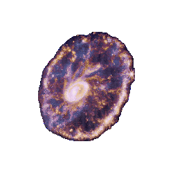

d i r e c t o r y
welcome to my homepage!

my name is DREW! i'm a second year astrophysics ph.d. student at the university of massachusetts amherst , among many other things. my origins lie in the midwest (michigan), but i now reside in western massachusetts. if i'm not spending too much time on science i'm likely reading, hiking, climbing, thrifting, or causing mischief. you can learn more about me here.
this website serves as a facet of my professional presence, and a personal archive of resources, ideas, and projects. you can reach me for professional or personal reasons through my contact page. the directory on the left likely contains anything you may be looking for.
quick info about this website:
- hosted on my github. my neocities profile also redirects here.
- the template is originally from ribo.zone. i have made some major changes, but the bones are still there!
- the script for the comments widget is originally from here.
- most images are from nasa, and have been edited by me.
- all of the code is written by humans! no ai here.
- my domain is a reference to giant molecular clouds, which are large complexes of cold gas and the primary location of star formation in the local universe.
- the site should mostly work on mobile, but is best viewed on a desktop
- this website is currently under construction! many of the personal pages are still incomplete.